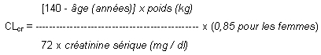

RÉSUMÉ DES CARACTÉRISTIQUES DU PRODUIT
ANSM - Mis à jour le : 04/12/2014
LEVOCETIRIZINE URGO 5 mg, comprimé pelliculé
2. COMPOSITION QUALITATIVE ET QUANTITATIVE
Chaque comprimé pelliculé contient 5 mg de dichlorhydrate de lévocétirizine.
Excipient: chaque comprimé pelliculé contient 65,950 mg de lactose monohydraté.
Pour la liste complète des excipients, voir rubrique 6.1.
Comprimé pelliculé blanc, rond et concave, portant l'inscription « 161» sur une face et « H » sur l'autre face.
4.1. Indications thérapeutiques
4.2. Posologie et mode d'administration
Les comprimés seront avalés avec une boisson et peuvent être pris au cours ou en dehors des repas. Il est conseillé de prendre la dose quotidienne en une seule prise.
Adultes et enfants de plus de 12 ans :
5 mg par jour, soit 1 comprimé pelliculé.
Sujets âgés :
Un ajustement de la dose est recommandé chez le sujet âgé s'il présente une insuffisance rénale modérée à sévère (voir « insuffisant rénal » ci-dessous).
Enfants de 6 à 12 ans :
5 mg par jour, soit 1 comprimé pelliculé.
La forme comprimé pelliculé ne permet pas l'adaptation posologique pour les enfants de 2 à 6 ans. Il est recommandé d'utiliser une forme pédiatrique de lévocétirizine.
Insuffisant rénal :
L'intervalle entre les prises doit être ajusté selon la fonction rénale comme indiqué dans le tableau ci-après.
Pour utiliser ce tableau, il est nécessaire de calculer la clairance de la créatinine (CLcr ) du patient en ml/min. La CLcr (ml/min) peut être estimée à partir de la valeur de la créatinine sérique (en mg/dl) selon la formule suivante :

Adaptation posologique chez l'insuffisant rénal :
|
Groupe |
Clairance de la créatinine (ml/min) |
Dose et fréquence d'administration |
|
Fonction rénale normale |
≥ 80 |
1 comprimé une fois par jour |
|
Insuffisance rénale légère |
50-79 |
1 comprimé une fois par jour |
|
Insuffisance rénale modérée |
30-49 |
1 comprimé une fois tous les 2 jours |
|
Insuffisance rénale sévère |
< 30 |
1 comprimé une fois tous les 3 jours |
|
Insuffisance rénale au stade terminal et patients dialysés |
< 10 |
Contre-indiqué |
Chez les enfants atteints d'insuffisance rénale, la dose sera ajustée individuellement en fonction de la clairance rénale du patient et de son poids. Il n'y a pas de données spécifiques chez les enfants atteints d'insuffisance rénale.
Insuffisant hépatique
Aucun ajustement de la dose n'est nécessaire chez le patient atteint d'insuffisance hépatique isolée.
Durée de traitement
La rhinite allergique intermittente, définie par la présence de symptômes moins de 4 jours par semaine ou sur une période de moins de 4 semaines, sera traitée en fonction de la pathologie et de son historique. le traitement peut être arrêté une fois les symptômes disparus et repris à la réapparition des symptômes. En cas de rhinite allergique persistante (définie par la survenue de symptômes plus de 4 fois par semaine et sur une période de plus de 4 semaines), un traitement continu peut être proposé au patient pendant la période d'exposition allergénique.
L'expérience clinique acquise est de 6 mois de traitement avec 1 comprimé à 5 mg de lévocétirizine par jour.
Avec la cétirizine (forme racémique), il existe une expérience clinique allant jusqu'à un an de traitement pour l'urticaire chronique et la rhinite allergique chronique.
· Hypersensibilité connue à l'un des composants du produit, ou aux dérivés de la pipérazine.
· Insuffisance rénale sévère avec clairance de la créatinine inférieure à 10 ml/min.
4.4. Mises en garde spéciales et précautions d'emploi
L'administration de lévocétirizine à l'enfant de moins de 2 ans n'est pas recommandée.
La prudence est recommandée en cas d'ingestion d'alcool (voir rubrique 4.5).
Ce médicament contient du lactose. Son utilisation est déconseillée chez les patients présentant une intolérance au galactose, un déficit en lactase de Lapp ou un syndrome de malabsorption du glucose ou du galactose (maladies héréditaires rares).
4.5. Interactions avec d'autres médicaments et autres formes d'interactions
Il a été observé une légère diminution de la clairance de la cétirizine (16 %) avec la théophylline en prises répétées (400 mg par jour en une prise), tandis que la biodisponibilité de la théophylline n'est pas modifiée par une administration concomitante de cétirizine.
Le taux d'absorption de la lévocétirizine n'est pas diminué par l'alimentation, bien que sa vitesse d'absorption soit réduite.
Chez certains patients sensibles, la prise concomitante d'alcool ou d'autres dépresseurs du système nerveux central avec la cétirizine ou la lévocétirizine pourrait avoir des effets sur le système nerveux central, bien qu'il ait été démontré que la cétirizine (forme racémique) ne potentialise pas les effets de l'alcool.
Aucune donnée clinique sur des grossesses exposées n'est disponible pour la lévocétirizine.
Les études menées chez l'animal n'ont pas révélé d'effet néfaste direct ou indirect sur la gestation, le développement embryonnaire et fœtal, la parturition et le développement post-natal.
La prudence est recommandée lors de la prescription chez la femme enceinte ou allaitante.
4.7. Effets sur l'aptitude à conduire des véhicules et à utiliser des machines
Cependant somnolence, fatigue et asthénie ont été décrits chez certains patients traités par lévocétirizine. Par conséquent, les patients susceptibles de conduire un véhicule, ou de manipuler un outil ou une machine potentiellement dangereux, devront évaluer au préalable leur réponse au traitement.
Au cours d'études cliniques menées chez des femmes et des hommes âgés de 12 à 71 ans, 15,1 % des patients du groupe lévocétirizine (5 mg) et 11,3 % des patients du groupe placebo ont présenté au moins un effet indésirable. 91,6 % de ces effets indésirables étaient d'intensité légère à modérée.
Dans les essais cliniques, le taux de sortie d'essai en raison d'évènements indésirables a été de 1,0 % (9/935 patients) dans le groupe lévocétirizine (5 mg), et de 1,8 % (14/771) dans le groupe placebo.
Au cours des essais cliniques, la lévocétirizine a été administrée à 935 sujets, à la posologie recommandée de 5 mg par jour.
Au cours de ces essais, l'incidence des effets indésirables les plus fréquemment rapportés était:
|
|
Placebo (n = 771) |
Lévocétirizine 5 mg (n = 935) |
|
Céphalées |
25 (3,2 %) |
24 (2,6 %) |
|
Somnolence |
11 (1,4 %) |
49 (5,2 %) |
|
Sécheresse de la bouche |
12 (1,6 %) |
24 (2,6 %) |
|
Fatigue |
9 (1,2 %) |
23 (2,5 %) |
Les effets indésirables tels qu'asthénie et douleur abdominale ont été rarement observés (compris entre 1/1 000 et 1/100).
Un effet sédatif se manifestant notamment par une somnolence, une fatigue ou une asthénie a été observé dans l'ensemble plus fréquemment sous lévocétirizine 5 mg (8,1 %) qu'avec le placebo (3,1 %).
En plus des effets indésirables rapportés au cours des essais cliniques et listés ci-dessus; quelques très rares cas d'effets indésirables ont été rapportés depuis la commercialisation du produit :
· Système immunitaire: hypersensibilité incluant des réactions anaphylactiques,
· Troubles psychiatriques: aggressivité, agitation,
· Troubles du système nerveux: convulsions,
· Troubles visuels,
· Troubles cardiaques: palpitations,
· Troubles respiratoires: dyspnée,
· Troubles du système gastro-intestinal: nausée,
· Troubles du système hépato-biliaire: hépatite,
· Peau et tissus sous-cutanés: œdème angioneurotique, érythème pigmenté fixe, prurit, rash, urticaire,
· Système musculo-squelettique: myalgie,
· Investigations: prise de poids, anomalie du bilan biologique hépatique.
Déclaration des effets indésirables suspectés
La déclaration des effets indésirables suspectés après autorisation du médicament est importante. Elle permet une surveillance continue du rapport bénéfice/risque du médicament. Les professionnels de santé déclarent tout effet indésirable suspecté via le système national de déclaration : Agence nationale de sécurité du médicament et des produits de santé (ANSM) et réseau des Centres Régionaux de Pharmacovigilance - Site internet: www.ansm.sante.fr.
Les symptômes de surdosage peuvent inclure: chez l'adulte, une somnolence et chez l'enfant, un état d'agitation suivi d'une somnolence.
Conduite à tenir en cas de surdosage
Il n'existe pas d'antidote connu à la lévocétirizine.
En cas de surdosage, un traitement symptomatique sera entrepris en milieu spécialisé. Un lavage gastrique sera envisagé en cas d'ingestion récente. La lévocétirizine n'est pas éliminée par hémodialyse.
5. PROPRIETES PHARMACOLOGIQUES
5.1. Propriétés pharmacodynamiques
La lévocétirizine, le R-énantiomère de la cétirizine, est un antagoniste puissant et sélectif des récepteurs périphériques H1.
Des études de liaison aux récepteurs ont révélé que la lévocétirizine a une forte affinité pour les récepteurs humains H1 (Ki = 3,2 nmol/l). La lévocétirizine a une affinité 2 fois supérieure à celle de la cétirizine (Ki = 6,3 nmol/l). La demi-vie de dissociation de la lévocétirizine des récepteurs H1 est de 115 ± 38 min. Il a été démontré que le taux d'occupation des récepteurs après administration unique de lévocétirizine est de 90 % après 4 h et de 57 % à 24 h.
Les études de pharmacodynamie menées chez le volontaire sain ont montré une activité comparable entre la cétirizine et la lévocétirizine administrée à demi dose, tant au niveau de la peau que du nez.
Les propriétés pharmacodynamiques de la lévocétirizine ont été étudiées dans des essais randomisés contrôlés.
Une étude a comparé les effets de la lévocétirizine 5 mg, la desloratadine 5 mg et un placebo, sur la réaction érythémato-papuleuse induite à l'histamine. Le traitement par lévocétirizine a significativement réduit papules et érythème (p < 0,001) avec une intensité maximale dans les 12 premières heures et maintenue pendant 24 h ce comparativement à la desloratadine et au placebo.
Dans une étude contrôlée contre placebo en chambre d'exposition pollinique, le délai d'action sur les symptômes a été de 1 heure après administration de 5 mg de lévocétirizine.
Les études menées in vitro (chambre de Boyden et technique sur culture cellulaire) montrent que la lévocétirizine inhibe in vitro la migration transendothéliale eotaxin-induite des éosinophiles à travers des cellules dermiques et bronchiques. Au cours d'une étude de pharmacodynamie expérimentale menée in vivo chez 14 patients (technique de chambre cutanée) trois effets inhibiteurs principaux ont été mis en évidence dans les premières 6 heures de la réaction induite par une exposition aux pollens: inhibition de la libération de VCAM-1, modulation de la perméabilité vasculaire et diminution du recrutement en éosinophiles.
L'efficacité et la sécurité de la lévocétirizine ont été démontrées au cours de plusieurs études cliniques en double aveugle, contrôlées, versus placebo, chez des patients présentant une rhinite allergique saisonnière ou perannuelle, ou persistante. La lévocétirizine a significativement amélioré les symptômes de la rhinite allergique, y compris l'obstruction nasale.
Une étude clinique réalisée sur 6 mois chez 551 patients adultes (dont 276 patients traités par lévocétirizine) présentant une rhinite allergique persistante (symptômes présents 4 jours par semaine pendant au moins 4 semaines consécutives) et sensibilisés aux acariens et aux pollens de graminées a démontré que la lévocétirizine 5 mg était significativement plus efficace que le placebo sur l'amélioration du score symptomatique global de la rhinite allergique sur toute la durée de l'étude, sans tachyphylaxie. Pendant toute la durée de l'étude, la lévocétirizine a significativement amélioré la qualité de vie des patients.
L'efficacité et la sécurité de la lévocétirizine sous forme comprimé ont été démontrées au cours de deux études cliniques contrôlées contre placebo chez des enfants de 6 à 12 ans présentant une rhinite allergique soit saisonnière soit perannuelle. Dans les deux études, le traitement par lévocétirizine a significativement amélioré les symptômes et la qualité de vie liée à l'état de santé.
Dans une étude clinique contrôlée contre placebo réalisée chez 166 patients présentant une urticaire chronique idiopathique, 85 patients ont été traités par placebo et 5 mg de lévocétirizine ont été administrés à 81 patients une fois par jour pendant 6 semaines. Le traitement par lévocétirizine a significativement diminué la sévérité du prurit au cours de la première semaine et pendant toute la durée du traitement comparativement au placebo. La mesure de la qualité de vie sur l'échelle, Dermatology quality of life Index, a montré un effet significativement supérieur de la lévocétirizine 5 mg par rapport au placebo.
Les études cliniques visant à établir l'effet dans le traitement des manifestations allergiques cutanées ont été conduites chez des sujets atteints d'urticaire idiopathique chronique. La libération d'histamine étant le facteur déclenchant inducteur de manifestations cutanées urticariennes, l'efficacité en traitement symptomatique de la lévocétirizine peut être extrapolée aux autres formes d'urticaire.
Relations pharmacocinétique/pharmacodynamie:
L'effet sur les réactions cutanées provoquées par l'histamine n'est pas corrélé avec l'évolution des concentrations plasmatiques.
Les ECG n'ont pas montré d'effets de la lévocétirizine sur l'intervalle QT.
5.2. Propriétés pharmacocinétiques
Absorption
La lévocétirizine est rapidement et largement absorbée après ingestion orale. Chez l'adulte, les concentrations plasmatiques maximales sont atteintes 0,9 h après la prise. L'état d'équilibre est atteint après 2 jours. Les concentrations plasmatiques maximales sont de 270 ng/ml et 308 ng/ml après administration, respectivement, d'une dose unique de 5 mg et de doses répétées de 5 mg par jour. La biodisponibilité est indépendante de la dose et n'est pas modifiée par la prise alimentaire, cependant, le pic de concentration est diminué et retardé.
Distribution
Aucune donnée n'est disponible chez l'homme concernant la diffusion tissulaire ou le passage de la barrière hémato-encéphalique de la lévocétirizine. Chez le rat et le chien, les plus fortes concentrations tissulaires ont été retrouvées au niveau du foie et des reins, les plus faibles au niveau du système nerveux central.
La fraction de lévocétirizine liée aux protéines plasmatiques est de 90 %. La distribution de la lévocétirizine est restreinte, puisque son volume de distribution est de 0,4 l/kg.
Métabolisme
Chez l'homme, la fraction de lévocétirizine métabolisée est inférieure à 14 % de la dose absorbée. Par conséquent, les différences résultant d'un polymorphisme génétique ou de la prise concomitante d'inhibiteurs enzymatiques sont considérés comme négligeables. Les voies métaboliques comprennent l'oxydation aromatique, la N et O - déalkylation et la conjugaison taurine. Les voies de déalkylation impliquent en premier lieu le CYP 3A4, l'oxydation implique des isoformes multiples et/ou non identifiées des CYP. La lévocétirizine n'a pas d'effet sur l'activité des isoenzymes CYP 1A2, 2C9, 2C19, 2D6, 2E1 et 3A4 à des concentrations nettement supérieures à celles atteintes après l'administration orale d'une dose de 5 mg.
En raison de sa faible métabolisation et de l'absence de potentiel inhibiteur du métabolisme, l'interaction de la lévocétirizine avec d'autres substances, ou vice-versa, est peu probable.
Elimination
Chez l'adulte, la demi-vie plasmatique est de 7,9 ± 1,9 heures. La clairance corporelle totale apparente moyenne est de 0,63 ml/min/kg. La principale voie d'élimination de la lévocétirizine et de ses métabolites est urinaire, représentant en moyenne 85,4 % de la dose absorbée. L'élimination par voie fécale ne représente que 12,9 % de la dose. La lévocétirizine est excrétée à la fois par filtration glomérulaire et par sécrétion tubulaire active.
Insuffisance rénale
La clairance corporelle apparente de la lévocétirizine est corrélée à la clairance de la créatinine. Il est par conséquent recommandé d'ajuster la fréquence d'administration de la lévocétirizine en fonction de la clairance de la créatinine, chez les patients atteints d'insuffisance rénale modérée à sévère. Chez les patients anuriques atteints d'insuffisance rénale au stade terminal, la clairance corporelle totale est réduite d'environ 80 % par rapport à celle d'un sujet normal. La quantité de lévocétirizine éliminée au cours d'une séance classique d'hémodialyse de 4 heures est inférieure à 10 %.
5.3. Données de sécurité préclinique
Lactose monohydraté, cellulose microcristalline, silice colloïdale anhydre, stéarate de magnésium.
Pelliculage
OPADRY YS-I-7003 : Dioxyde de titane (E171), hypromellose, macrogol 400 et polysorbate 80.
3 ans.
6.4. Précautions particulières de conservation
Ce médicament ne nécessite pas de précautions particulières de conservation.
6.5. Nature et contenu de l'emballage extérieur
Toutes les présentations peuvent ne pas être commercialisées.
6.6. Précautions particulières d’élimination et de manipulation
Pas d’exigences particulières.
7. TITULAIRE DE L’AUTORISATION DE MISE SUR LE MARCHE
42 RUE DE LONGVIC
21300 CHENOVE
8. NUMERO(S) D’AUTORISATION DE MISE SUR LE MARCHE
· 34009 279 344 7 6 : 1 comprimé sous plaquette (OPA/Aluminium/PVC/Aluminium).
· 34009 279 345 3 7 : 2 comprimés sous plaquette (OPA/Aluminium/PVC/Aluminium).
· 34009 279 347 6 6 : 4 comprimés sous plaquettes (OPA/Aluminium/PVC/Aluminium).
· 34009 279 348 2 7 : 5 comprimés sous plaquettes (OPA/Aluminium/PVC/Aluminium).
· 34009 279 349 9 5 : 7 comprimés sous plaquettes (OPA/Aluminium/PVC/Aluminium).
· 34009 279 350 7 7 : 10 comprimés sous plaquettes (OPA/Aluminium/PVC/Aluminium).
· 34009 279 351 3 8 : 14 comprimés sous plaquettes (OPA/Aluminium/PVC/Aluminium).
· 34009 279 353 6 7 : 15 comprimés sous plaquettes (OPA/Aluminium/PVC/Aluminium).
· 34009 279 354 2 8 : 20 comprimés sous plaquettes (OPA/Aluminium/PVC/Aluminium).
· 34009 279 355 9 6 : 21 comprimés sous plaquettes (OPA/Aluminium/PVC/Aluminium).
· 34009 279 356 5 7 : 28 comprimés sous plaquettes (OPA/Aluminium/PVC/Aluminium).
· 34009 279 357 1 8 : 30 comprimés sous plaquettes (OPA/Aluminium/PVC/Aluminium).
· 34009 586 955 3 7 : 40 comprimés sous plaquettes (OPA/Aluminium/PVC/Aluminium).
· 34009 586 957 6 6 : 50 comprimés sous plaquettes (OPA/Aluminium/PVC/Aluminium).
· 34009 586 958 2 7 : 56 comprimés sous plaquettes (OPA/Aluminium/PVC/Aluminium).
· 34009 586 959 9 5 : 60 comprimés sous plaquettes (OPA/Aluminium/PVC/Aluminium).
· 34009 586 960 7 7 : 70 comprimés sous plaquettes (OPA/Aluminium/PVC/Aluminium).
· 34009 586 961 3 8 : 90 comprimés sous plaquettes (OPA/Aluminium/PVC/Aluminium).
· 34009 586 963 6 7 : 100 comprimés sous plaquettes (OPA/Aluminium/PVC/Aluminium).
· 34009 586 964 2 8 : 120 comprimés sous plaquettes (OPA/Aluminium/PVC/Aluminium).
9. DATE DE PREMIERE AUTORISATION/DE RENOUVELLEMENT DE L’AUTORISATION
[A compléter ultérieurement par le titulaire]
10. DATE DE MISE A JOUR DU TEXTE
[A compléter ultérieurement par le titulaire]
Sans objet.
12. INSTRUCTIONS POUR LA PREPARATION DES RADIOPHARMACEUTIQUES
Liste II.